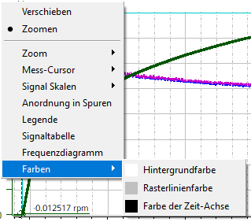

Die Farbe des Trace-Diagramm-Hintergrunds, der Rasterlinien und der horizontalen Zeit-Achse können über das Kontextmenü "Farben" geändert werden. Bei Auswahl einer Menüoption wird ein Farbauswahl-Dialog geöffnet.

| Hinweis |
Die Farben der Signalkurven werden über die Signaltabelle geändert. |